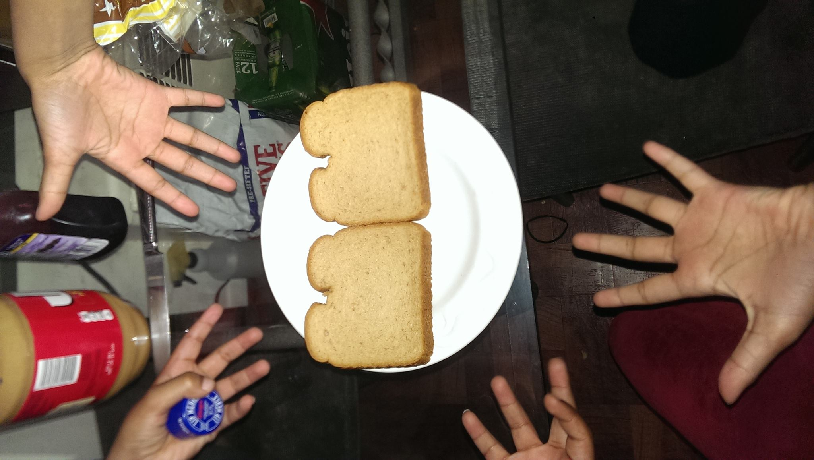
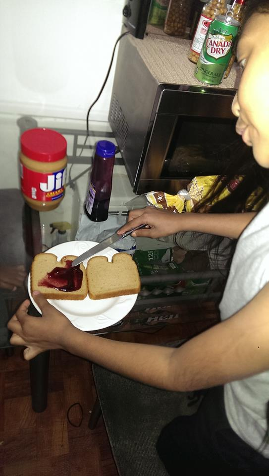
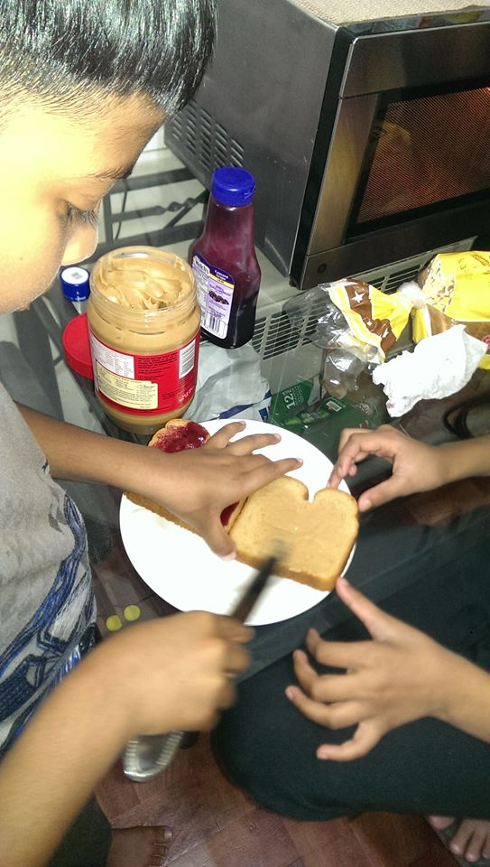
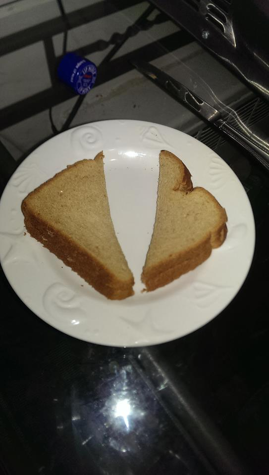
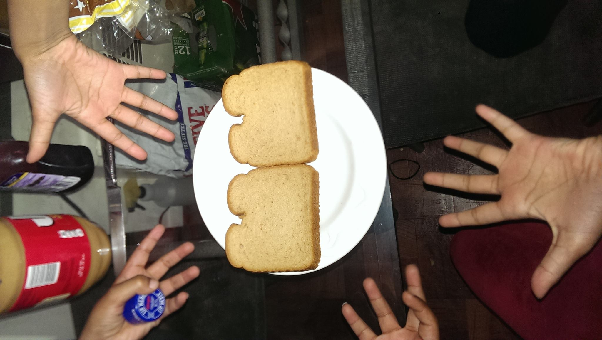
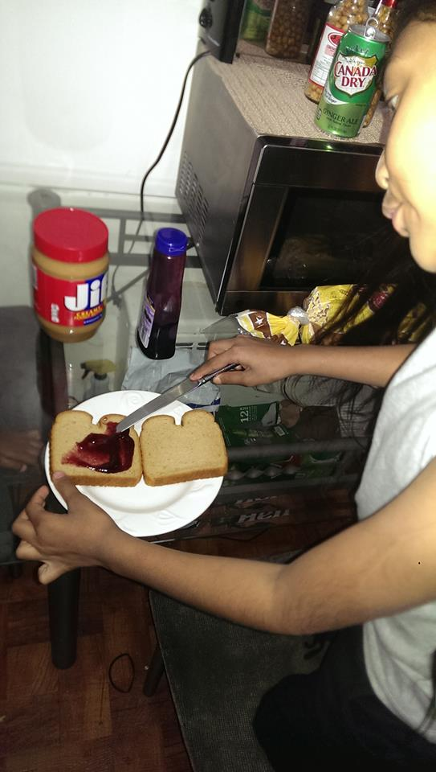
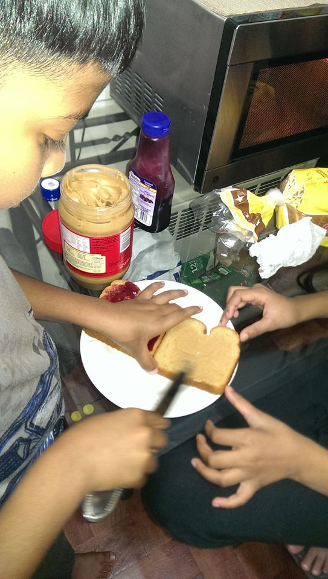
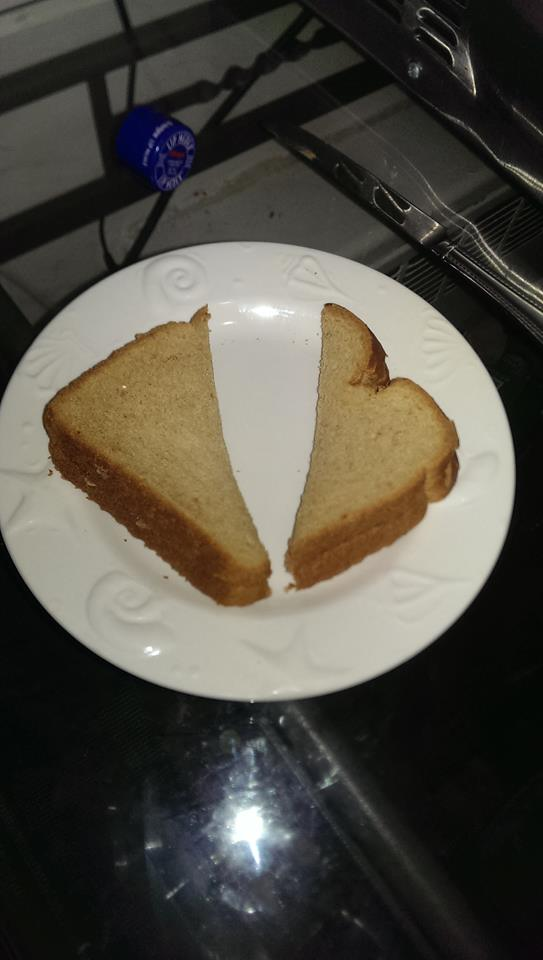

How To Effectively Make a Peanut Butter and Jelly Sandwich
Ever wonder what the perfect meal is after getting some work done? Or how about those snacks you're not supposed give in to when you wake up at midnight? You want something quick and easy, yet pleasantly delicious. The peanut butter and Jelly sandwich (PBJ) is the champion of such snacks! This is a guide to making a delicious PBJ sandwhich to satisfy the need of getting something quick and satisfactory!
- Butter Knife
- Jar of Peanut Butter
- Jar of Jelly
- Bread
- Plates
Materials needed
Instructions:
1. Go ahead and put two slices of bread on the plate. Doesn't matter if you prefer whole-wheat or white bread, either way it's going to be delicious!

2. Let's start with opening the Jar of Jelly. Jelly is much easier to wash off of the butter knife than peanut butter. You wanna make sure you're putting them together in the bread, not mixing them in the jars. Apply the jelly to one piece of bread, make sure you put down enough jelly so that you cover the entire slice. Think of it as coloring in a picture from a coloring book! Stay within the lines (the edge of the bread)

3. Rinse the jelly off of the butter knife at your kitchen sink or just wipe it off with a paper towel, and now we open up the jar of peanut butter. As mentioned in step 2, make sure you cover the entire slice. Nothing is more unsatisfying than having a dry and untouched part of bread as you sink your teeth into what is supposed to be the most convenient snack ever. Don't be afraid to coat the peanut butter on there with a thick layer.

4. You're almost done! Pick up the slice with peanut butter on it. Peanut butter doesn't slide off of things as easily, so you always want to flip the peanut butter slice onto the jelly slice. When applying the peanut butter, make sure you line it up perfectly over the jelly slice. If you don't do this perfectly you might see jelly oozing out of the sandwich (depending on how much jelly you put down). Smush the sandwich just a little bit to make sure it's really on there.

5. Cut the sandwich in half. It would be too flimsy to bring to your mouth that way. If it's in half, it maintains its composure very well. Now it's ready for you to bite into! It helps to have a glass of milk nearby to help you bring it down

1. Go ahead and put two slices of bread on the plate. Doesn't matter if you prefer whole-wheat or white bread, either way it's going to be delicious!
2. Let's start with opening the Jar of Jelly. Jelly is much easier to wash off of the butter knife than peanut butter. You wanna make sure you're putting them together in the bread, not mixing them in the jars. Apply the jelly to one piece of bread, make sure you put down enough jelly so that you cover the entire slice. Think of it as coloring in a picture from a coloring book! Stay within the lines (the edge of the bread)
3. Rinse the jelly off of the butter knife at your kitchen sink or just wipe it off with a paper towel, and now we open up the jar of peanut butter. As mentioned in step 2, make sure you cover the entire slice. Nothing is more unsatisfying than having a dry and untouched part of bread as you sink your teeth into what is supposed to be the most convenient snack ever. Don't be afraid to coat the peanut butter on there with a thick layer.
4. You're almost done! Pick up the slice with peanut butter on it. Peanut butter doesn't slide off of things as easily, so you always want to flip the peanut butter slice onto the jelly slice. When applying the peanut butter, make sure you line it up perfectly over the jelly slice. If you don't do this perfectly you might see jelly oozing out of the sandwich (depending on how much jelly you put down). Smush the sandwich just a little bit to make sure it's really on there.
5. Cut the sandwich in half. It would be too flimsy to bring to your mouth that way. If it's in half, it maintains its composure very well. Now it's ready for you to bite into! It helps to have a glass of milk nearby to help you bring it down
